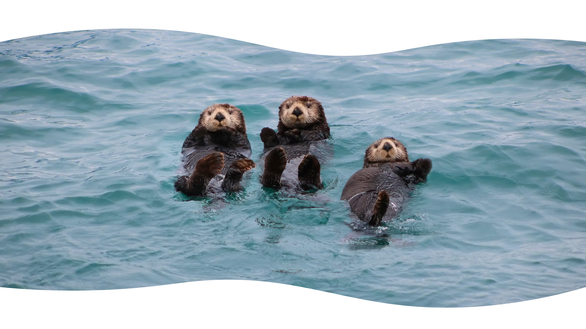

Rivierotter >
De rivierotter is een van de beste zwemmers en hardste renners vergeleken met andere otter soorten.

De rivierotter is een van de beste zwemmers en hardste renners vergeleken met andere otter soorten.
De zeeotter leeft voornamelijk in zee en drijft vaak op zijn rug terwijl hij eet of slaapt.
De reuzenotter is de grootste ottersoort ter wereld en leeft in groepen in rivieren en meren van Zuid-Amerika.
De langstaartotter heeft een opvallend lange staart die hij gebruikt om goed te kunnen sturen en zwemmen in het water.
De kleinklauwotter is de kleinste ottersoort ter wereld en gebruikt zijn kleine, gevoelige pootjes om voedsel te zoeken in ondiep water.